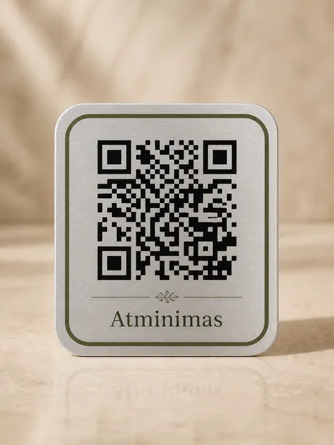

Apie atminimo išsaugojimą
QR kodas ant kapo: kaip veikia atminimo lentelė?
Ant paminklo telpa vardas ir datos. Atminimo puslapyje galima papasakoti daugiau: išsaugoti žmogaus gyvenimo istoriją, šeimos nuotraukas ir artimųjų prisiminimus. QR lentelė sujungia kapavietę su šia istorija.

Kaip nuskaityti QR kodą ant paminklo?
Atverkite telefono kamerą ir nukreipkite ją į ant lentelės išgraviruotą QR kodą. Palietus telefono parodytą nuorodą, naršyklėje atsivers artimojo atminimo puslapis. Daugumai šiuolaikinių telefonų atskiros QR skaitymo programėlės nereikia.
QR kode saugoma puslapio nuoroda, o tekstai ir nuotraukos – pačiame puslapyje. Todėl puslapio savininkas gali papildyti prisiminimus nekeisdamas fizinės lentelės. Puslapiui atidaryti reikia interneto ryšio ir veikiančios paslaugos.
Ką įrašyti į artimojo atminimo puslapį?
Pradėkite nuo kelių svarbiausių dalykų. Nebūtina iš karto parašyti visos biografijos – tekstą ir nuotraukas galėsite papildyti vėliau.
- Gyvenimo istorija. Gimimo ir mirties datos, gimtinė, darbai, pomėgiai ir žmogui svarbūs gyvenimo įvykiai.
- Šeimos nuotraukos. Portretas ir kelios nuotraukos, kurios primena bendrus susitikimus, keliones ar kasdienybę.
- Asmeniniai prisiminimai. Artimojo posakis, trumpas pasakojimas, epitafija ar šeimai reikšmingas vaizdo įrašas.
Rinkitės medžiagą, kuria šeima sutinka dalytis ir kurią turite teisę naudoti. Puslapio matomumą valdykite jo nustatymuose; prieš tvirtindami lentelę patikrinkite, kaip nuoroda atsidaro kitame telefone.
Ar vienas QR kodas tinka šeimos kapavietei?
Taip. „Atminimas“ leidžia su vienu QR kodu susieti iki 8 žmonių atminimą. Nuskenavęs lentelę lankytojas gali pasirinkti konkretų žmogų ir perskaityti jo istoriją. Tai patogu, kai vienoje kapavietėje palaidoti keli šeimos nariai.
Parduotuvėje pasirinkite „Keliems žmonėms“. Papildomo mokesčio už žmonių skaičių nėra – lentelės kainą lemia pasirinktas raštas.
Kokią QR atminimo lentelę pasirinkti?
Siūloma 5 × 5 cm plieninė lentelė. Galite pasirinkti sidabro, aukso arba juodą spalvą ir vieną iš keturių variantų: tik QR kodą, gyvybės medį, širdį ir žvakę arba angelo sparnus.
Rinkdamiesi pagalvokite apie paminklo spalvą, lentelės vietą ir tai, ar prie jos bus patogu prieiti su telefonu. QR kodas turėtų likti lengvai matomas, neuždengtas gėlėmis ar kitomis dekoracijomis.
Lentelė tvirtinama klijais. Klijus ir paviršiaus paruošimą rinkitės pagal paminklo medžiagą bei klijų gamintojo instrukciją. Jei dėl tvirtinimo abejojate, prieš darbą pasitarkite su paminklo prižiūrėtoju ar meistru.
Kaip užsakyti lentelę ir sukurti puslapį?
- Pasirinkite lentelę. Parduotuvėje nurodykite spalvą, raštą ir ar puslapis skirtas vienam, ar keliems žmonėms.
- Paruoškite atminimo puslapį. Prisijunkite, įrašykite artimojo istoriją ir pridėkite nuotraukas.
- Patikrinkite ir apmokėkite. Nurodykite pristatymo duomenis. Prieš mokėjimą per Paysera matysite galutinę sumą.
Pristatymo ir gamybos sąlygas rasite QR lentelių parduotuvėje. Skaitmeninis puslapis veikia, kol paslauga aktyvi; konkrečias saugojimo sąlygas galite pasitikslinti prieš užsakydami.
Dažniausi klausimai apie QR lentelę
Ar nuskenavus QR kodą reikia prisijungti?
Viešą atminimo puslapį galima peržiūrėti naršyklėje be paskyros. Redaguoti informaciją gali puslapio savininkas, prisijungęs prie savo paskyros. Prieš dalydamiesi patikrinkite pasirinktas matomumo nuostatas.
Ar pakeitus nuotraukas reikės naujos lentelės?
Ne. Jei naudojate tą patį atminimo puslapį, jo nuoroda išlieka ta pati. Savininkas gali redaguoti tekstus ir nuotraukas, o išgraviruoto QR kodo keisti nereikia.
Kaip rasti kapavietę prieš užsakant lentelę?
Naudokitės kapų paieška pagal vardą ir pavardę. Jei rezultatų daug, pridėkite savivaldybę, kapinių pavadinimą ar metus. Įrašų prieinamumas priklauso nuo paieškos šaltinių duomenų.